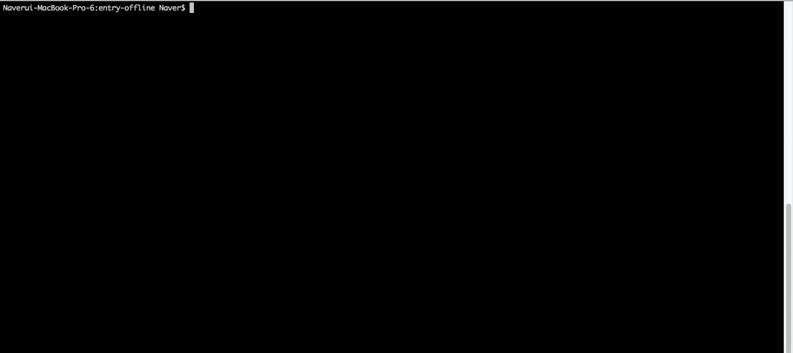

시작하기
엔트리 오프라인은?
엔트리 오프라인은 엔트리 웹 사이트에 접속할 수 없는 오프라인 환경에서도 엔트리를 사용할 수 있도록 제작된 프로그램입니다.
Electron 기반인 엔트리 오프라인 프로젝트는, entryjs 와 entry-hw 프로젝트를 내장하고 있습니다.
또한, 엔트리 오프라인의 프로그램 실행, 패키징, 빌드는 Electron-Forge 를 통해 이루어집니다.
엔트리 오프라인 개발을 위해서는 이에 대한 선행지식이 필요합니다.
Electron 개발문서 : https://electronjs.org/docs
Electron-Forge 개발문서 : https://electronforge.io/
개발환경 세팅
프로젝트 포크
엔트리 하드웨어 개발시 원본 프로젝트에서의 직접 작업은 허용되지 않습니다.
그러므로 프로젝트를 복사하는 fork 작업을 거쳐야 합니다.
먼저, entry-offline github 페이지에 접속 합니다.
사이트 접속 후 우측 상단에 있는 Fork 버튼을 클릭합니다.
클론
fork 를 통해 원격 저장소를 복사하였으면, 로컬로 저장소를 가져와야 합니다. git clone을 수행하여 로컬에 해당 소스를 받습니다.$ git clone https://github.com/(본인의 Repository)/entry-offline.git
bower 설치
엔트리 오프라인에서 렌더링 프로세스에 속하는 라이브러리들은 npm 이 아닌 bower 패키지 매니저를 통해 관리 합니다.
그러므로 전역 레벨로 bower를 설치 해주셔야 합니다.
npm install -g bower |
의존성 모듈 설치
$ npm install |
c++ compiler & 파이선 설치
엔트리 오프라인을 최종적으로 빌드 하기 위해서는 컴파일 과정이 수행되어야 합니다.
이 과정에서 파이선과 C++ 컴파일러가 필요하게 됩니다.
실행 확인
npm start |

정상적으로 세팅된 경우, 위와 같이 정상 구동을 확인하실 수 있습니다.